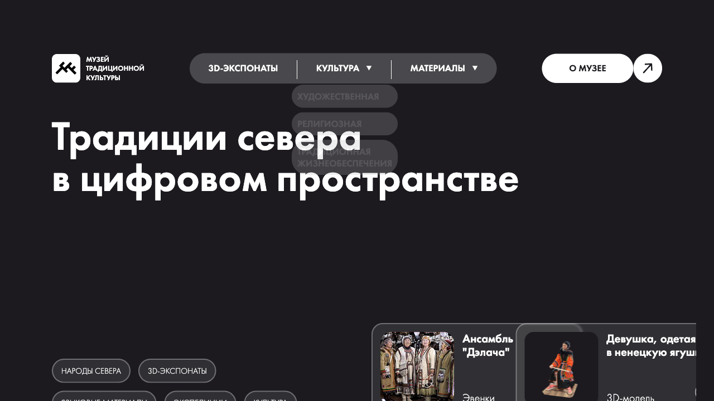

Проекты

Техническая информация
Стек:
- backend: PHP, MySQL
- frontend: HTML, CSS, JavaScript
GitHub:
Команда:
- Петр Иванов, backend
- Мария Сидорова, frontend
Особенности:
- фронтенд не связан с бэкендом
- используется REST API
Техническая информация
Стек:
- backend: Node.js, Express
- frontend: React, Redux
GitHub:
Команда:
- Анна Петрова, fullstack
- Иван Смирнов, дизайн
Особенности:
- PWA-приложение
- Использует IndexedDB для оффлайн-работы
Технопарк Проекты
Эффективное и комфортное планирование. Создай свой проект на базе Технопарка РГПУ!
Техническая информация
Стек:
- backend: Django, PostgreSQL
- frontend: Vue.js, Vuetify
GitHub:
Команда:
- Сергей Кузнецов, backend
- Елена Васнецова, frontend
Особенности:
- Интеграция с Google Calendar API
- Drag-and-drop интерфейс
Виртуальный музей
Виртуальный музей традиционной культуры коренных малочисленных народов Севера, Сибири и Дальнего Востока — цифровая платформа для сохранения и популяризации культурного наследия.
Техническая информация
Стек:
- backend: Laravel, MySQL
- frontend: React, Three.js
GitHub:
Команда:
- Дмитрий Соколов, 3D-графика
- Ольга Иванова, контент
- Алексей Петров, разработка
Особенности:
- 3D-тур по музею
- Интерактивные экспонаты
- Мультиязычная поддержка
Лендинг ИТвД и Скиллс Паспорт
Современный сайт направления «Информационные технологии в дизайне»
Техническая информация
Стек:
- backend: WordPress
- frontend: HTML, CSS, JavaScript
GitHub:
Команда:
- Александра Ковалева, дизайн
- Максим Новиков, разработка
Особенности:
- Адаптивный дизайн
- Интерактивная галерея работ
Интернет-журнал "Пеликан"
Сайт для написания, чтения и обмена статьями и конспектами, предназначенный для студентов и преподавателей РГПУ им. А.И.Герцена
Техническая информация
Стек:
- backend: Ruby on Rails, PostgreSQL
- frontend: StimulusJS, Hotwire
GitHub:
Команда:
- Артем Васильев, fullstack
- Наталья Семенова, контент
Особенности:
- WYSIWYG редактор
- Система модерации контента
- Рейтинговая система статей
Техническая информация
Стек:
- backend: Python, Flask
- frontend: Bootstrap, jQuery
GitHub:
Команда:
- Игорь Лебедев, разработка
- Екатерина Морозова, контент
Особенности:
- Система категорий и тегов
- Поиск по контенту
Техническая информация
Стек:
- backend: Node.js, MongoDB
- frontend: Next.js
GitHub:
Команда:
- Павел Смирнов, fullstack
- Алина Кузнецова, дизайн
Особенности:
- Система корзины и оформления заказа
- Интеграция с платежной системой
Открытый кампус
Открытый кампус РГПУ им. А. И. Герцена — это пространство в исторических зданиях Герценовского университета, где проходят образовательные и научные мероприятия.
Техническая информация
Стек:
- backend: PHP, Laravel
- frontend: Vue.js
GitHub:
Команда:
- Денис Федоров, backend
- Светлана Иванова, frontend
Особенности:
- Календарь мероприятий
- Система бронирования мест
3d карта
Всё для студентов РГПУ в одном месте: 3D-карта кампуса, расписание с навигацией, актуальные новости и личный кабинет.
Техническая информация
Стек:
- backend: ASP.NET Core
- frontend: Three.js, React
GitHub:
Команда:
- Андрей Павлов, 3D-графика
- Виктория Семенова, разработка
Особенности:
- Интерактивная 3D-карта
- Интеграция с расписанием
Техническая информация
Стек:
- Игровой движок: Unity
- Язык программирования: C#
GitHub:
Команда:
- Михаил Орлов, геймдизайн
- Анна Власова, 3D-модели
Особенности:
- Реалистичная физика сбора грибов
- Энциклопедия грибов в игре